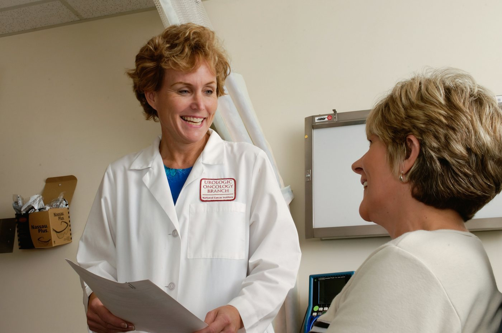

Dra. Marina Castilho
Diretora clínica · CRO-SP 78.412
Especialista pela USP, com quinze anos dedicados à reabilitação oral.
Moema · a 300 m do metrô
Onze profissionais com especialização registrada no conselho, prontuário único e retorno garantido em até quinze dias.
Atendimento Segunda a sexta, 8h às 20h · Sábado, 8h às 14h

Valores de referência para atendimento particular. Convênios aceitos: Amil, Bradesco, SulAmérica e Unimed.

Com retorno em até 15 dias
Dermato, ortopedia ou cardiologia
Inclui radiografia panorâmica
Retornos e resultados de exames
Profilaxia e aplicação de flúor
Consultório e moldeira caseira
50 minutos, individual
Você conta o que incomoda e o que espera. Sem pressa e sem cadeira reclinada.
Avaliação clínica e exames de imagem feitos na hora, no mesmo andar.
Você sai com o diagnóstico, as opções de tratamento, os prazos e os valores.
Sem pressão para fechar. O orçamento vale por 60 dias.
Profissionais com especialização registrada no conselho. A direção clínica é das fundadoras.

Diretora clínica · CRO-SP 78.412
Especialista pela USP, com quinze anos dedicados à reabilitação oral.

Clínico geral · CRM-SP 132.550
Residência em Medicina de Família pela Unifesp. Atende adultos e idosos.
A avaliação custa R$ 150 e inclui a radiografia. O valor é abatido do tratamento se você decidir fazer com a gente.
Atendemos Amil, Bradesco, SulAmérica e Unimed. Para outros planos, emitimos recibo para reembolso.
Oferecemos sedação consciente e marcamos as consultas com tempo de sobra. Avise ao agendar.
Sim. Temos convênio com o estacionamento ao lado: duas horas gratuitas para pacientes.
Guardamos horários de encaixe todos os dias para urgências. Confirmamos pelo WhatsApp em até uma hora.